主路线
从南侧照护院向北进入横廊，在病房门前确认接应，护送伤兵经实际门洞走向南侧后撤口。
旧书库按原剧情重做为统一去顶室内，取消屋顶建筑。其余六图逐一从原剧情核对空间用途，修正病房门口、桥头衔接、下层宫室和阶台高差；保留剧情、数值规则和现有动画。
前后地图均来自游戏原生渲染器；各图按任务重组空间，左右按各自完整边界展示，并非同像素比例的面积对比。点击原图可放大检查。
王都内廷保留室外院落与北殿；两病房采用去顶剖面呈现床位、内墙和真实南门，伤兵从门内候位走到救护横廊。
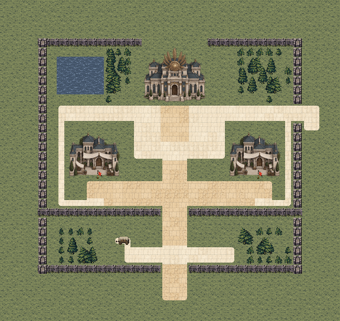
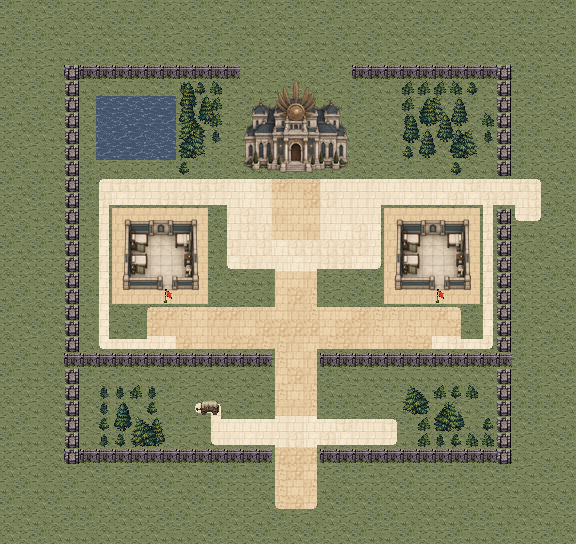
从南侧照护院向北进入横廊，在病房门前确认接应，护送伤兵经实际门洞走向南侧后撤口。
两病房外侧廊与宫前横廊可换线，室内床位和墙体不作为穿行捷径。
确认病房只解除伤兵锁定；真实门洞本来可通行。两病房都须确认，至少一组撤离并击败首领，规则保持。
蓝：候选部署；红：守军；金：剧情友军；绿：交互；紫：出口。路线仅为本页解释，不加入实机画面。实际通行以游戏地形为准。
结算时正式队员 6/6 存活；无人濒死。
1,357次按键，含出入场与战后操作。原始记录
结算时正式队员 6/6 存活；无人濒死。
1,123次按键，含出入场与战后操作。原始记录
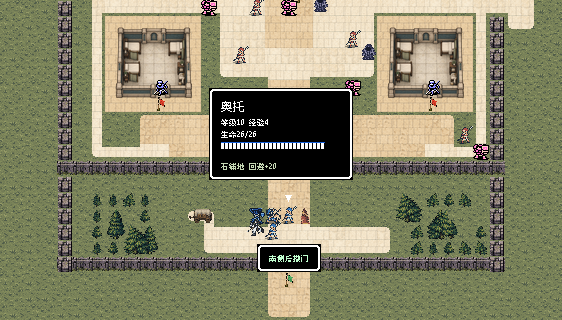
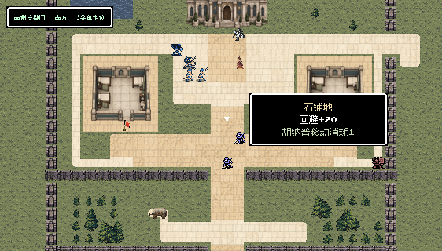
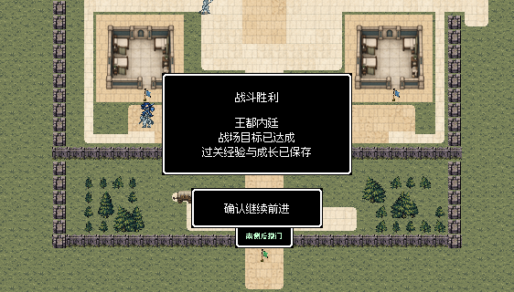
三段桥与中间承台维持连续，补清两端岸侧衔接及桥体支撑，使桥面跨越水域、承台承接通行的关系可见。

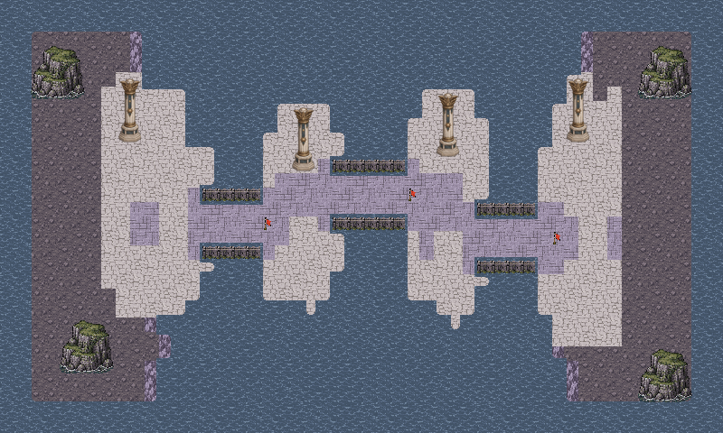
从西端接岸处向东依次确认三个桥锁，在中间承台换队后继续抵达神宫入口。
中间承台用于展开和接应，飞行支援仍不能替代桥锁顺序。
桥口便于集中防守，也会限制大队展开；可在承台换队和等待后卫，避免所有人挤进同一狭口。第4回合援军由西岸落脚平台进入。
蓝：候选部署；红：守军；金：剧情友军；绿：交互；紫：出口。路线仅为本页解释，不加入实机画面。实际通行以游戏地形为准。
结算时正式队员 6/6 存活；无人濒死。
1,088次按键，含出入场与战后操作。原始记录
结算时正式队员 5/6 存活；濒死：赫维。
1,060次按键，含出入场与战后操作。原始记录
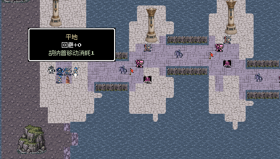
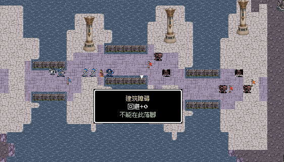
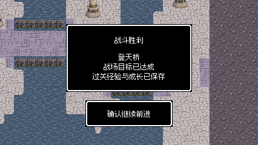
地下水渠和两处修复区保留，补清北侧上行阶梯的可走踏步与落脚处，以及南侧返回入口，使水工维修层和神宫通道有实际联系。

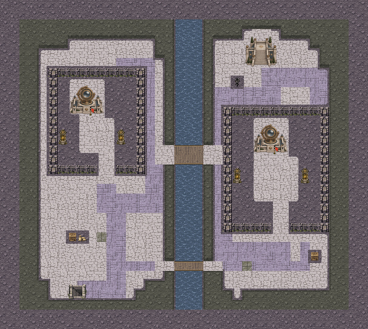
由南侧进入维修层，交接第一工班后跨检修桥前往第二工班，完成保护并击败守卫。
南维护桥与主桥形成两条跨渠路线；上行阶梯与设备操作面保持独立，不能踩设备代替走阶梯。
每处交接分别计算等待回合，确认当回合还不能离开防护责任；两工班都必须存活。南桥绕行与主桥集中推进各有代价，第3回合东南援军保持。
蓝：候选部署；红：守军；金：剧情友军；绿：交互；紫：出口。路线仅为本页解释，不加入实机画面。实际通行以游戏地形为准。
结算时正式队员 7/7 存活；无人濒死。
2,419次按键，含出入场与战后操作。原始记录
结算时正式队员 7/7 存活；无人濒死。
2,594次按键，含出入场与战后操作。原始记录
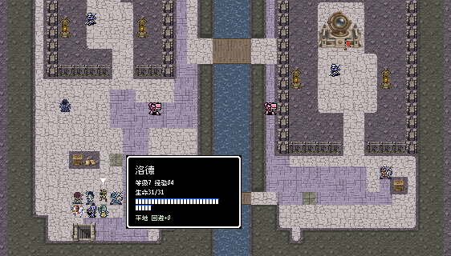
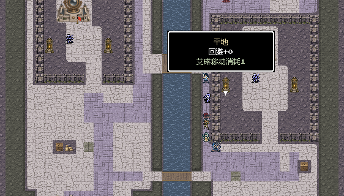
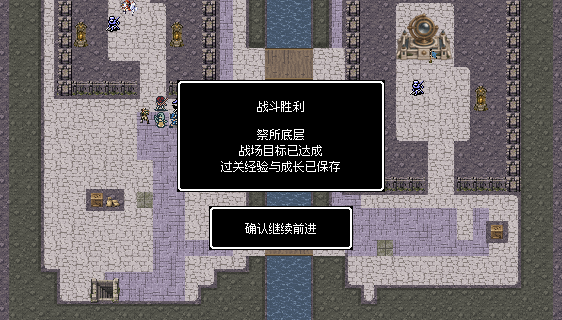
取消下层地坪中的整栋屋顶宫殿，改为去顶门厅与通廊；连续室内铺地、墙体、两翼阵台和人工水池共同表达神宫下层。
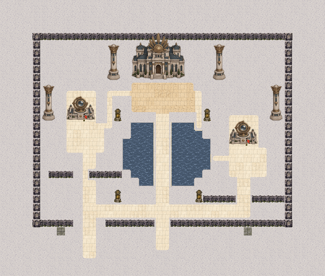
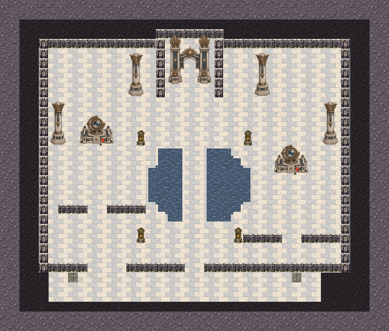
从南侧入口进入下层控制厅，分别到两座阵台南面确认，再向北侧神官与门厅推进。
中央池上通道较直接，两翼侧廊可换线；不同门洞与阵台纵深保留战术选择。
门阵必须在各装置南面分别确认，走过不会自动完成；两处确认都不能由击败神官替代。中央石桥直接，但两侧水庭限制横向展开。
蓝：候选部署；红：守军；金：剧情友军；绿：交互；紫：出口。路线仅为本页解释，不加入实机画面。实际通行以游戏地形为准。
结算时正式队员 7/7 存活；无人濒死。
1,219次按键，含出入场与战后操作。原始记录
结算时正式队员 7/7 存活；无人濒死。
1,578次按键，含出入场与战后操作。原始记录
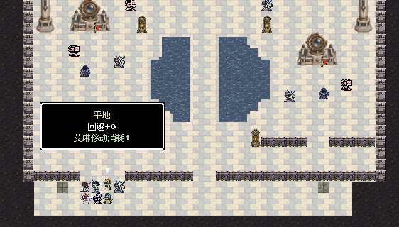
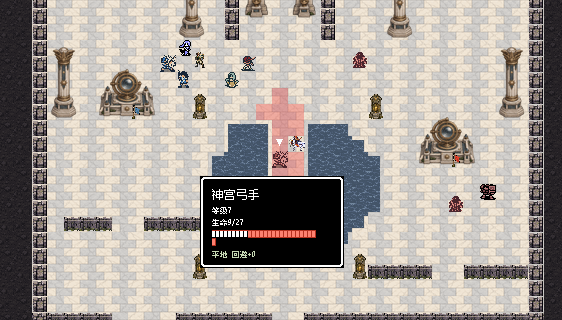
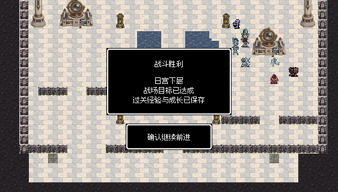
统一去顶室内：连续木地板与石质中厅由实体厚墙分隔，北档案室、错位阅览翼和南楼梯间均在同一建筑内部。原件由档案家具呈现，完整屋顶建筑已移除。
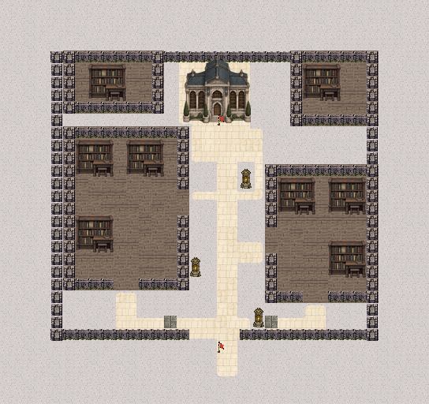

从南楼梯平台进入中厅，到北档案台南面取回原件；击败守卫后回到南端下行楼梯交接，表达撤回下层。
西阅览翼可从南门或东侧门进入，东翼的错位门洞提供另一侧路线；封存侧室不放任务目标。
北侧取档和南楼梯交接必须分别完成；书架与厚墙真实阻挡，封存侧室没有额外任务或奖励。合军后支线关闭，规则保持。
蓝：候选部署；红：守军；金：剧情友军；绿：交互；紫：出口。路线仅为本页解释，不加入实机画面。实际通行以游戏地形为准。
结算时正式队员 7/7 存活；无人濒死。
832次按键，含出入场与战后操作。原始记录
结算时正式队员 7/7 存活；无人濒死。
779次按键，含出入场与战后操作。原始记录
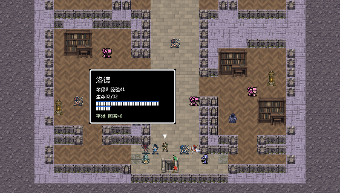
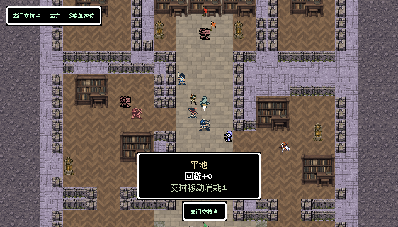
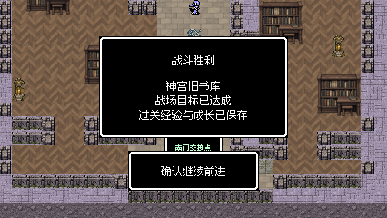
前庭保留室外宫殿、两翼庭路和人工内池；中央跨池连接改用同层石桥，使通路与水庭关系一致，不再用单向楼梯暗示无依据的高差。
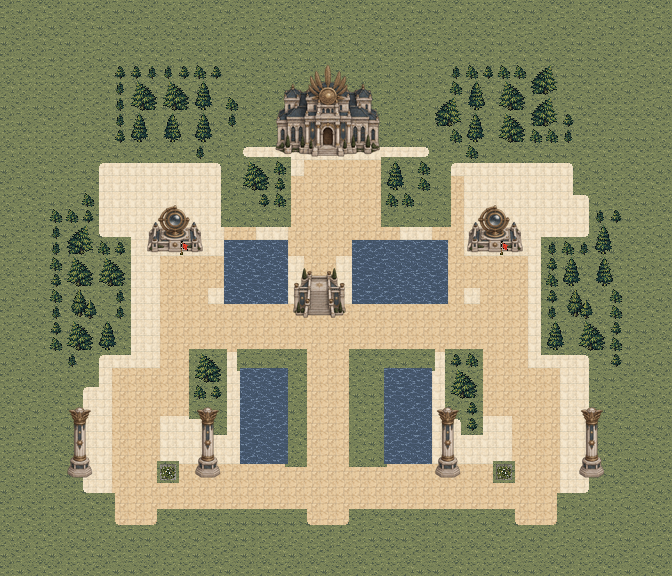

两军分别由南侧两翼推进，完成阵台确认后经横廊和中央石桥共同接近统领。
两条横向联络路线支持跨翼接应；屋顶宫殿在室外前庭北缘，作为建筑外观成立。
两翼各有守军，分头推进较快但需要照顾弱领队；确认后不用永久站点。双主角必须存活，双方原队归属与各最多十人部署保持。
蓝：候选部署；红：守军；金：剧情友军；绿：交互；紫：出口。路线仅为本页解释，不加入实机画面。实际通行以游戏地形为准。
结算时正式队员 14/14 存活；无人濒死。
2,224次按键，含出入场与战后操作。原始记录
结算时正式队员 14/14 存活；无人濒死。
2,699次按键，含出入场与战后操作。原始记录
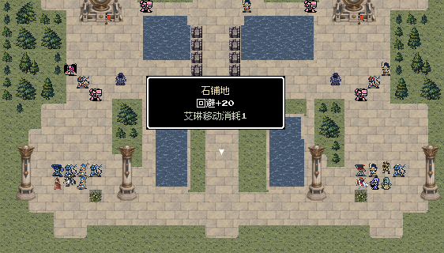
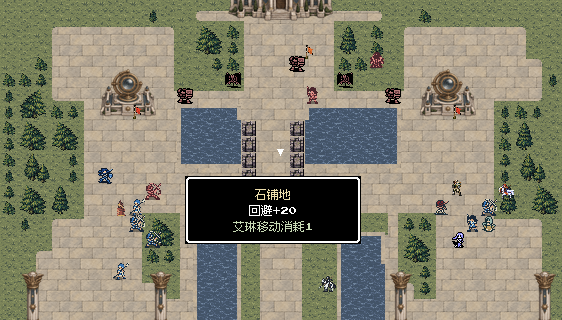
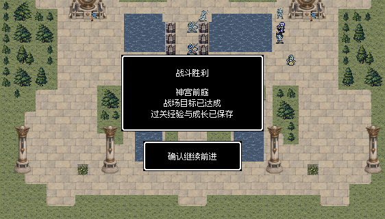
神座保留露天祭坛构图，三座阶口之间补连续台基挡墙，人工池岸与高台边界一致；地面单位须经实际踏步上台。


两军在南侧展开，处理侧翼敌军后由中央或两侧阶口进入上层攻击平台。
后方横廊用于换翼与后撤，侧阶提供分进选择；普通地面单位不能从草地直接穿过高台立面。
阶梯只有踏步可走，栏柱真实阻挡；首领周围留出近战、法术和半血援军空间。普通武器与法术始终有效，半血仅一次强化与召唤，不回血。
蓝：候选部署；红：守军；金：剧情友军；绿：交互；紫：出口。路线仅为本页解释，不加入实机画面。实际通行以游戏地形为准。
结算时正式队员 14/14 存活；无人濒死。
3,110次按键，含出入场与战后操作。原始记录
结算时正式队员 14/14 存活；无人濒死。
2,718次按键，含出入场与战后操作。原始记录
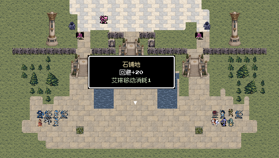
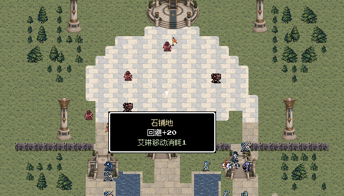

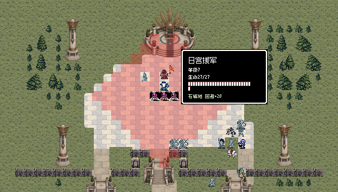

以下关卡仅修改材质及必要的开门后贴图，布局、单位、动作和任务规则保持原样。
修正：两间牢室及开门后的门槛改为石地，院外保留土路。


修正：矿道大厅的沼泽底纹改为洞穴碎石与压实矿道。


修正：码头木栈改为风化灰木板，船体甲板保持。
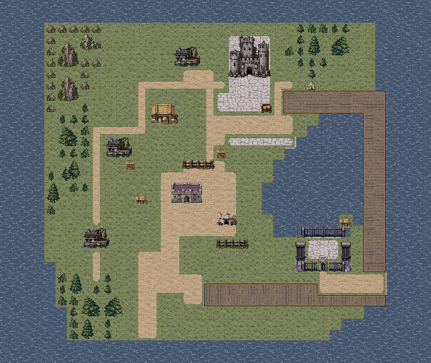

修正：岸侧木栈和跳板使用风化木材，船体甲板保持。


修正：室外检修木桥使用风化木材，与船板区分。
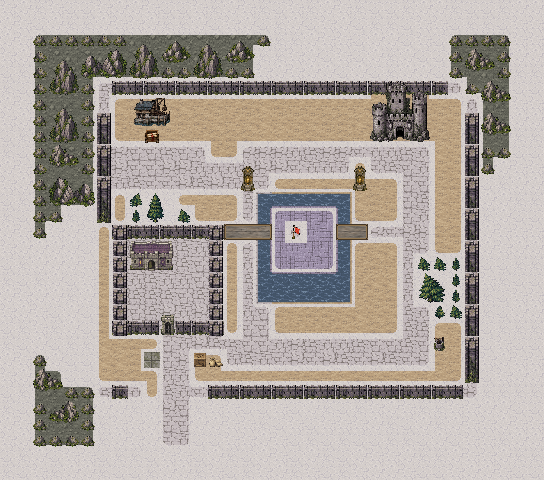
修正：剖面牢室内使用室内磨损石地，山村接近区的草地、土路保持。

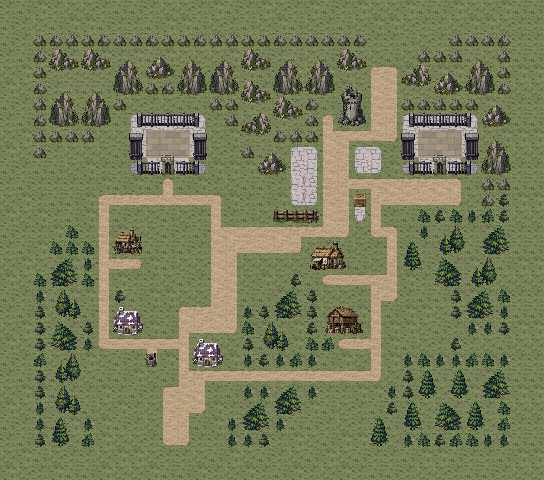
修正：剖面牢室内使用室内磨损石地，营地外盐土与道路保持。

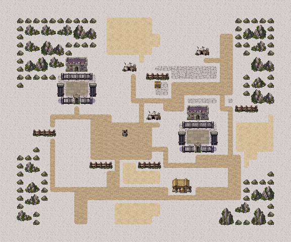
修正：岩石脚下移除洞窟底纹，改为对应沙地过渡。


修正：岩石脚下移除洞窟底纹，改为对应盐原表面。
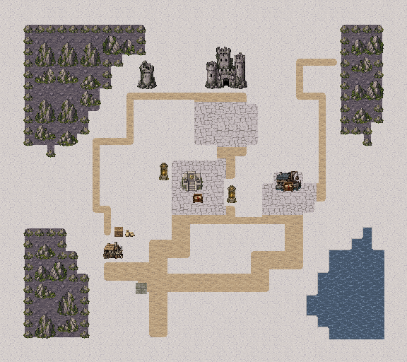
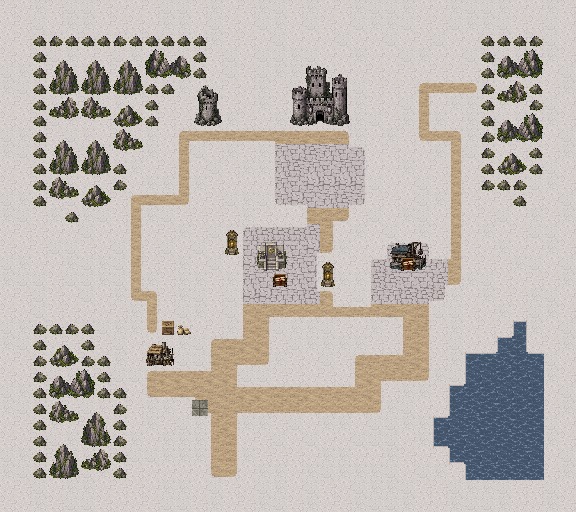
逐图核对原生画面、贴图来源和场景用途。此前章节只修正材质引用，保持布局、单位、交互和剧情规则。点击图号查看当前完整场景。
| 地图 | 场景与地面 | 检查结论 |
|---|---|---|
| M11 流民林路 | 雪原室外林路、渡溪木桥与安全村舍 | 保留：实际纹理、材质来源与场景用途相符。 |
| M12 丘堡粮站 | 室外丘坡粮站、粮仓门前作业院 | 保留：实际纹理、材质来源与场景用途相符。 |
| M13 南岗押送所 | 河岸押送所外院、两间囚室和木桥 | 修正：两间牢室及开门后的门槛改为石地，院外保留土路。 |
| M14 旧塔外营 | 室外军营、营帐与营路 | 保留：实际纹理、材质来源与场景用途相符。 |
| M15 海峡旧塔堡 | 海峡旧堡的露天内院、外营与码头栈道 | 保留：实际纹理、材质来源与场景用途相符。 |
| S11 旧矿道救援 | 地下旧矿道大厅、采掘岩体与压实矿路 | 修正：矿道大厅的沼泽底纹改为洞穴碎石与压实矿道。 |
| S12 林村诊所道路 | 室外林村诊所道路、装车院与双木桥 | 保留：实际纹理、材质来源与场景用途相符。 |
| F21 海上拦截 | 室外海面上的运输船与搜捕舰甲板、登船跳板 | 保留：实际纹理、材质来源与场景用途相符。 |
| F22 押送舰救援 | 室外押送舰/接应船甲板与铁栅囚舱 | 保留：实际纹理、材质来源与场景用途相符。 |
| F23 礁岛登岸 | 海岛沙滩、林地草坡与村庄土路 | 保留：实际纹理、材质来源与场景用途相符。 |
| F24 海灯岛防卫 | 黑昼海岛、灯庭露天石台、岸滩与村道 | 保留：实际纹理、材质来源与场景用途相符。 |
| F25 潮狩军港 | 室外军港、岸上土路/石台与露天木码头 | 修正：码头木栈改为风化灰木板，船体甲板保持。 |
| F26 断航古道 | 室外海岸水道、砌石海堤与堤后土路 | 保留：实际纹理、材质来源与场景用途相符。 |
| S21 漂泊渔船 | 漂泊渔船甲板、登船跳板与沙岸停泊口 | 保留：实际纹理、材质来源与场景用途相符。 |
| S22 碎石海洞 | 潮湿海洞：岩壁、浅滩湿地与较干的通行土脊 | 保留：实际纹理、材质来源与场景用途相符。 |
| M31 西街撤离 | 西街室外街坊、民宅门坪与拘押院 | 保留：实际纹理、材质来源与场景用途相符。 |
| M32 军需大道截运 | 室外军需大道、两座运输站装卸坪 | 保留：实际纹理、材质来源与场景用途相符。 |
| M33 沿海石堡 | 沿海石堡露天守备院、工房外巷与投送木码头 | 保留：实际纹理、材质来源与场景用途相符。 |
| F31 码头脱围 | 室外码头街区、岸侧木栈与接应船甲板 | 修正：岸侧木栈和跳板使用风化木材，船体甲板保持。 |
| F32 盐路解围 | 露天旧海床盐原、盐池、土质干道与岩脊 | 保留：实际纹理、材质来源与场景用途相符。 |
| F33 提炼院后庭 | 室外提炼院后庭、砌石环廊、水庭与木检修桥 | 修正：室外检修木桥使用风化木材，与船板区分。 |
| S31 山村地牢 | 户外山村接近区与两处剖面牢室 | 修正：剖面牢室内使用室内磨损石地，山村接近区的草地、土路保持。 |
| S32 盐原营地 | 露天盐原营地、土路/沙区与两处剖面拘押营房 | 修正：剖面牢室内使用室内磨损石地，营地外盐土与道路保持。 |
| M41 雪峡撤离战 | 室外雪峡村落、两处河桥和撤离古道 | 保留：实际纹理、材质来源与场景用途相符。 |
| M42 铁骑封锁线 | 室外骑兵关口、木围营院及林缘侧路 | 保留：实际纹理、材质来源与场景用途相符。 |
| M43 北境日塔 | 露天雪地塔院，土路接铺石检修道 | 保留：实际纹理、材质来源与场景用途相符。 |
| M44 王都城门 | 王都城门外的草地、医舍院与石砌主街 | 保留：实际纹理、材质来源与场景用途相符。 |
| F41 沙城守井战 | 沙地城镇、两处井台及山石边缘 | 修正：岩石脚下移除洞窟底纹，改为对应沙地过渡。 |
| F42 盐原观测台 | 盐原观测设施、设备石台与海岸 | 修正：岩石脚下移除洞窟底纹，改为对应盐原表面。 |
| F43 亡潮沼泽 | 潮沼中的干岛、危险湿地和木栈道 | 保留：实际纹理、材质来源与场景用途相符。 |
| F44 沉没祭所 | 露天沉没祭所，多块石台由木维修桥相连 | 保留：实际纹理、材质来源与场景用途相符。 |
| S41 黑钟村名册 | 雪地村落道路与钟塔、档案屋 | 保留：实际纹理、材质来源与场景用途相符。 |
| S42 沼泽孤岛 | 沼泽孤岛诊所、干岛、湿地与接船木台 | 保留：实际纹理、材质来源与场景用途相符。 |
| M51 王都内廷 | 室外王都内廷与剖面病房 | 修正：病房呈现床位与室内方石，伤兵真实经过南门；院外草地与石路保留。 |
| M52 登天桥 | 室外跨水石桥与连续岩岸 | 修正：风化石桥、承台与厚岩岸相接；原三段桥跨度和敌我相对距离保持。 |
| F51 祭所底层 | 地下水工维修层，剖顶石构工作间和连续主渠 | 地下粗石维修地保留；修正可走层间阶梯与人工渠沿。 |
| F52 日宫下层 | 室内神宫下层门厅，连接祭所通道、旧书库与前庭方向 | 修正：去顶室内控制厅使用神宫大理石，取消厅内屋顶宫殿。 |
| S51 神宫旧书库 | 室内书库：独立拼木地、磨损石中厅与南楼梯间 | 修正：船板/大理石复用改为室内拼木与暖灰磨损石地，北档案室不再摆屋顶建筑。 |
| J53 神宫前庭 | 室外神宫前庭，门阵、正殿外立面与水庭 | 修正：前庭为室外铺石，跨人工内池使用同层石桥。 |
| J54 太阳神乌库布·卡基 | 露天神座台地，上庭/下庭经三处阶梯连接 | 修正：上层大理石神座与下层露天石坪区分，三阶口之间补真实高台边界。 |
七图完成两轮逐关实际输入复测，检查战后据点、救援、工班修复、门阵控制和主线接续。从第四章真实完成记录重新开始第五章，连续完成七图及23页完整结局，没有重试或跳关。M51/M52/F51/F52/S51/J53/J54分别在12/12/51/18/10/9/12回合胜利。F51中诺娅按普通战斗结果濒死并保留后续伤情；H55正常使用剩余救治份额救回希雅，终局10名正式出战成员全部存活。
从原剧情重新判断室内外：旧书库改为统一室内档案室、阅览翼与楼梯间；日宫下层移除厅内屋顶宫殿。王都伤兵从真实病房门内撤出，登天桥补连续厚岩岸，祭所与神座阶梯形成可读高差。全部40图逐张核对材质来源，修正矿道沼泽底、沙盐地上的洞窟底色、牢室地坪及户外木栈，并区分室内拼木、室内石地和神宫大理石。
2597项独立规则、连通与保存检查通过；23张实机视口文字安全区检查无错误。前四章33张地图的布局、单位、剧情和规则保持；本轮按逐图复核结果修正错误材质，本轮全部程序、战斗规则与人物动画代码保持原样。
两轮逐关检查使用真实开发记录的隔离副本；测试程序通过普通按键驱动实际游戏，完成移动、战斗、交互和结算，没有修改属性、随机结果或强制胜利。表内回合数受路线、命中和伤情影响，不代表固定难度。
先完成S51室内几何两轮，再按追加要求更换其室内材质；旧成功记录仍保留，最终选用的是新材质版两轮。全章连续流程重新从第四章真实完成记录开始，一次走到完整后日谈；没有重试、属性编辑或强制胜利。
未重新安装手机包；HTML资源与脚本检查不等同浏览器布局验收。